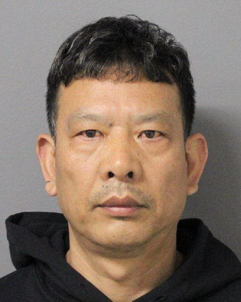
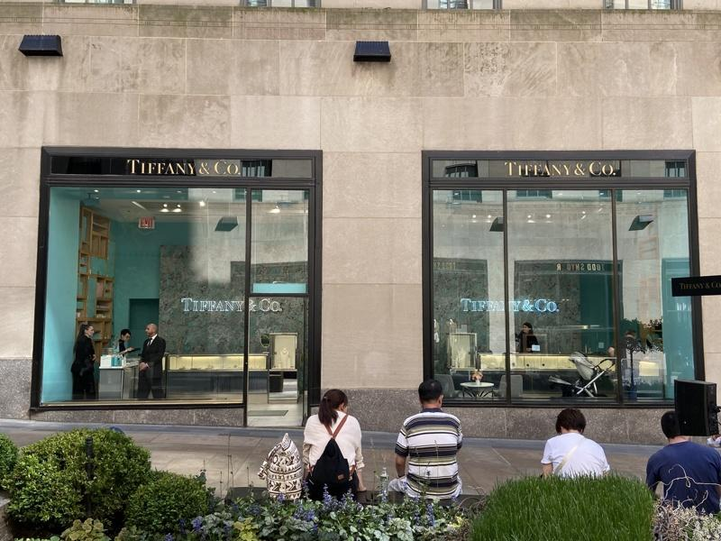

曼哈顿地区检察官白艾荣(Alvin Bragg)和纽约市警总局局长卡班(Edward Caban)5日联合宣布，以四项重罪罪名起诉涉嫌在纽约多家高级珠宝店，盗窃价值数十万元钻戒的华裔国际大盗万耀荣(Yaorong Wan，音译)。

根据起诉书，万耀荣于今年3月4日前往位于第五大道洛克菲勒中心的蒂芙尼珠宝店(Tiffany & Co.)，要求试看一枚价值22万5000元的钻戒，在假装试看的过程中，他使用隐秘手法将真品塞入手掌，然后将一枚赝品交还给店员。直到一周之后，蒂芙尼进行店内盘点时，才发现铂金天然钻石材质的天价钻戒，已被人造宝石制成的赝品调包。
3月12日，万耀荣又前往位于哈德逊广场(Hudson Yards)的卡地亚珠宝店(Cartier)，要求试看两枚钻戒和两块手表，随后他趁店员分神之时，交回了其中一枚钻戒，并趁乱将另一枚价值2万4000元的钻戒放入口袋后离开。
嫌疑人万耀荣被控一项二级重窃罪(Grand Larceny)、一项二级持有赃物罪(Criminal Possession of Stolen Property)以及一项三级重窃罪和一项三级持有赃物罪。
根据此前的报导，现年49岁的万耀荣为一名跨国大盗，他曾因在南韩的蒂芙尼珠宝店盗窃价值超过33万元的珠宝，而被国际刑警组织发布红色通缉令。而在逍遥法外多年后，他又于2023年年末走线进入美国。此后，他在不到半年的时间内先后在佛州迈阿密、加州比佛利山庄(Beverly Hills)以及新泽西和纽约长岛等地，疯狂作案多起，盗窃价值数十万元。
今年5月，万耀荣在长岛纳苏郡落网。警方在他位于法拉盛的住处，搜出了多枚尚未出手的赃物，以及用来使用调包计的赝品钻戒。
万耀荣曾经的同居女友在接受媒体采访时透露，他的身分背景神秘，他自称是中国人，说中文、使用微信，然而警方则认为他来自南韩。目前，万耀荣被关押在纳苏郡，同时面临纳苏郡和来自其他州的刑事指控。